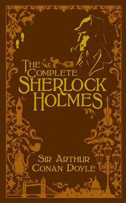

Never before had I been as enthralled in mythology as i was while reading this book. This high-adventure series start imagines Greek mythology in the modern world through the eyes of a sardonically funny 12-year-old who many kids know and love. Percy Jackson's origin story and first quest as a hero combine in The Lightning Thief. He goes from the worst kid in a school for delinquents with the worst -- and smelliest -- stepdad ever to full-fledged hero in less than 400 pages!
Eragon
Gonna be real with you, this one has dragons! Actually just the one to start with but that's more than enough to at least keep my attention. After a stone that the farm boy Eragon found in the mountains turns out to be a Dragon egg. He finds the legacy of the log gone Dragon Riders thrust upon as he is sent down the adventure of a life time.
The Forgotten Legion
Give fantasy a break and lets look at an interesting take on ancient Rome. The Forgotten Legion is a trilogy of historical fiction novels about Rome by author Ben Kane. The main characters are a young gladiator, his prostitute sister, his Gaulish warrior mentor, and an Etruscan soothsayer, who travel through the ancient world in search of freedom and purpose. All four will determine the fate of Rome...
Artemis Fowl
You should do your best to be educated otherwise the main character in this book will leave dumbfounded and confused if you could actually meet him. Twelve-year-old Artemis Fowl is a millionaire, a genius, and above all, a criminal mastermind. But even Artemis doesn't know what he's taken on when he kidnaps a fairy, Captain Holly Short of the LEPrecon Unit. These aren't the fairies of bedtime stories—they're dangerous! Full of unexpected twists and turns, Artemis Fowl is a riveting, magical adventure.
The Diabolic
Up into space this time with a wonderful sci-fi story. Red Queen meets The Hunger Games in this epic novel about what happens when a senator’s daughter is summoned to the galactic court as a hostage, but she’s really the galaxy’s most dangerous weapon in disguise.
A Diabolic is ruthless. A Diabolic is powerful. A Diabolic has a single task: Kill in order to protect the person you’ve been created for.
The Son of Neptune
Never count Percy Jackson out! As he stumbles into the ranks of the Roman demigods of Camp Jupiter. Percy has no memories before a couple weeks ago. After just a couple days in this new and strange place displaying uncommonly advance powers and skills he finds himself once again on a dangerous quest with some new friends.
Eldest
Gonna give you a chance to guess the theme on this one. You guessed it it's still fantasy! This time we're back to dragons though! Darkness falls…despair abounds…evil reigns…Eragon and his dragon, Saphira, have just saved the rebel state from destruction by the mighty forces of King Galbatorix, cruel ruler of the Empire. Now Eragon must travel to Ellesmera, land of the elves, for further training in the skills of the Dragon Rider.
The Complete Sherlock Holmes
Let us bring this back to some more classic literature. Here, in one exquisitely designed volume, are all 4 full-length novels and 56 short stories about the colourful adventures of Sherlock Holmes. It contains every word Sir Arthur Conan Doyle ever wrote about Baker Street's most famous resident.

The Blood of Olympus
You should absolutely never count out Percy Jackson and the crew of the Argo II. In the final book of the Heroes of Olypus series. We see some of our favorite heroes being forced to make tough choices to defeat Mother Earth herself.
Parallel
Down the virtual reality MMORPG rabbit hole we go. Following the death of his popular online persona, seventeen-year-old Suzuki Mato decides it’s time to retire from professional VR gaming. However, his plans are abruptly cut short when he’s kidnapped from his high school and forced to be a guinea pig for Genaco Gaming, the world’s largest esports and entertainment company. Armed with nothing but his wit and a new online persona, he’s thrown headfirst into the virtual reality of “Live No Evil,” a VRMMORPG littered with overpowered bosses, secretive NPCs, and backstabbing gods. His mission? Find a way to conquer this new world and get back at the company that took over his life, all while avoiding ‘Parallel’ — a condition that would make it impossible to separate his real and virtual personalities. Because in a world obsessed with VR gaming, Parallel means death, and Suzuki just doesn’t have time for that…